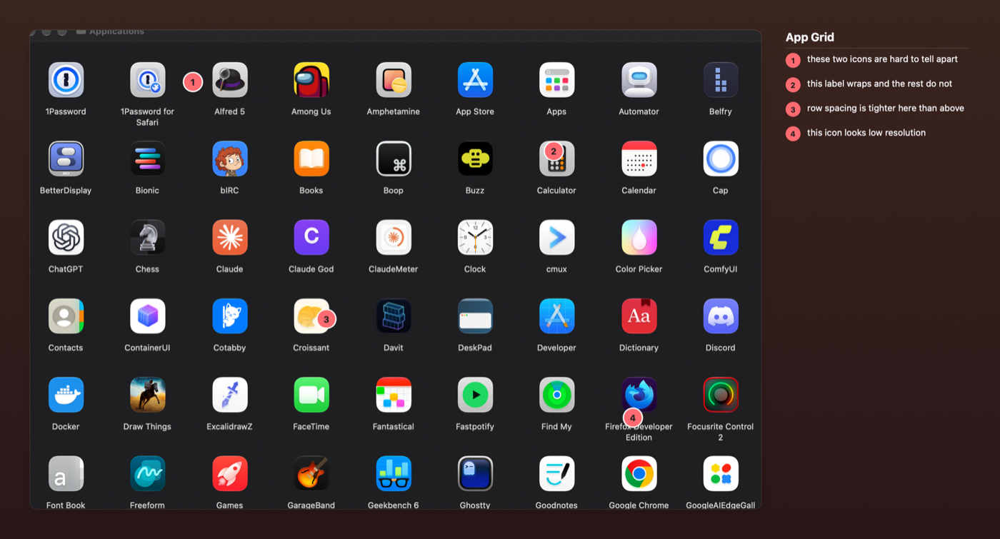
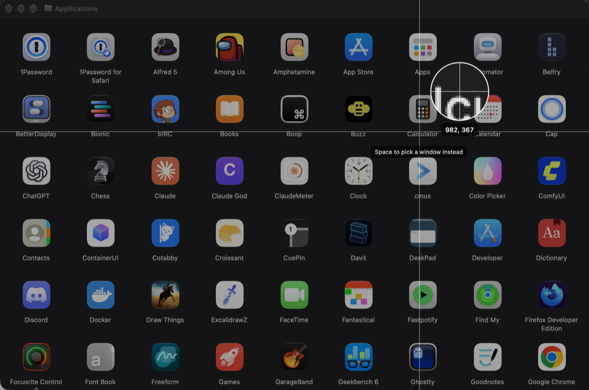
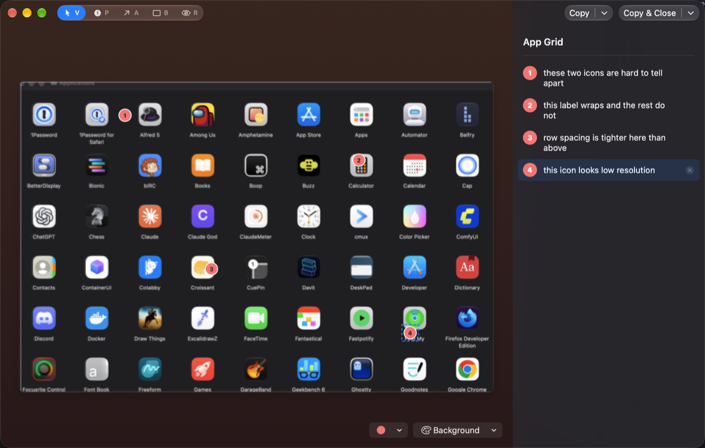

Take a screenshot. Drop numbered marks on the bits you mean, type a line against each number, redact what shouldn't be seen. You get one image back — the shot on a background, a numbered legend beside it — so “the heading in ① is too big” means something to a colleague, or to a model that can only see pixels.
Not released yet. The app is built and headed for the Mac App Store; the button above becomes real once it's through review. Until then the source is on GitHub, and feedback is welcome at hello@robgough.net.

“The button on the right — no, the other one, above the total” is a sentence nobody should have to write. Put a number on the thing instead, say what's wrong with it underneath, and there's nothing left to misread.
Who's on the other end doesn't change much.
A model can only see pixels. A number on the picture and the same number in the text beats a paragraph describing where everything is.
Design feedback, a bug report, a “check this before it ships” — one image, and every point already has a number to reply to.
“Here's the screen, here's the field I mean.” Anything that isn't their business is blacked out before the image leaves your Mac.
Click the Dock icon, pick New Capture from the menu bar, or press ⌃⇧S from any app. The screen freezes while you choose. There's an optional 3, 5 or 10 second timer if you need to get a menu open first.
Drag out a region, click a window, or take a whole screen. Space switches between dragging and picking a window, the way the system tool does, and the overlay names the window you're about to take. A magnifier shows the exact pixel under the crosshair, with its coordinates, so you land on an edge rather than near it.
Numbered pins, numbered arrows, numbered boxes, and redaction blocks for anything that shouldn't be seen. The moment a mark lands, the cursor is in its legend row: type, press Escape, click the next thing.
Copy & Close puts the composed image on the clipboard with the legend alongside it as text, and saves a PNG to Pictures › Shot and Tell. Paste into a chat and the picture arrives; paste into a text field and the words do.


The point is that a number on the picture always has words to go with it. Most of the rest is getting out of the way.
Everything below runs on your Mac, with nothing sent anywhere.
Pins, arrows and boxes share a single sequence, in the order you made them. Delete ② and everything after it renumbers, on the picture and in the legend. Reorder with ⌥⌘↑ and ⌥⌘↓, or from the menu on a number.
Copy puts the image on the clipboard and the legend on it as text at the same time. A model reads text in the prompt directly; it has to squint at text in an image. ⇧⌘C copies just the legend — a title and a numbered list.
Redaction blocks are painted into the exported image as solid fills. Whatever was underneath isn't in the file and isn't on the clipboard.
Marking something right on an edge? Marks can go in the background beside the screenshot, and the canvas grows to fit them. They can be moved and resized by their handles after they're drawn.
V, P, A, B and R pick a tool. Placing a mark drops you into its description and then back to Select, so the next click picks something up rather than making another one. Clicking a description highlights its mark; selecting a mark scrolls its description into view.
Eight marker presets or any colour from the system picker, per shot, because red marks on a red screenshot can't be seen. The number inside a marker switches to dark automatically on pale colours.
Neutral, one of four gradients, a flat tone, or none — light or dark, chosen per shot with a default in Settings. The framing never touches the screenshot's own pixels: the hairline sits outside the image, so every captured pixel survives the export exactly as taken.
If Apple Intelligence is available, the on-device model suggests a title from the screenshot itself. It runs on your Mac; nothing is sent anywhere. If it isn't available, the field stays empty and you type one.
Closed the editor by mistake, or thought of one more thing to point at? The menu bar reopens the last capture, marks and all. It can also reveal the last saved PNG in the Finder.
Exports at 2× with the long edge capped around 2400 points, so files stay small enough to drop into a chat. A long legend flows into columns rather than running off the bottom. Both are adjustable in Settings.
Screenshots usually have something in them you'd rather not send anywhere. So the app can't send anything anywhere.
Shot and Tell ships without the macOS network entitlement. Inside the App Store sandbox that means it can't open a connection at all — no updates, no analytics, no crash reports.
You can check. The entitlements file is in the source.
This website counts page views with Fathom, which is cookieless and doesn't track people between sites. The app doesn't, and couldn't. Full detail on the privacy page.
Anywhere you can paste an image. The composed PNG goes on the clipboard, and the legend goes on it as text at the same time — a chat box takes the picture, a plain text field takes the words. If you want both in one message, paste the image, then ⇧⌘C in the editor and paste again for the text.
No. It's used for one thing — suggesting a title from the screenshot — and only when the on-device model can look at images, which needs macOS 27 or later with Apple Intelligence turned on. On macOS 26, or with it off, the title field stays empty and you type one. Everything else is the same.
Because that is the only way macOS lets an app read what's on screen, screenshot tools included. Shot and Tell uses Apple's ScreenCaptureKit and only reads the screen when you start a capture. You can grant or revoke it any time in System Settings › Privacy & Security › Screen & System Audio Recording. It never asks for Accessibility.
Nowhere. The capture is held in memory while the editor is open, and after you close it so you can reopen it from the menu bar — until the next capture or until you quit. It is never written to disk. The only file the app writes is the composed export, to Pictures › Shot and Tell or a folder you pick in Settings, and you can turn saving off and just use the clipboard.
Yes, in Settings. It's ⌃⇧S to begin with because ⇧⌘3, 4 and 5 are already taken by the system screenshot tool. If a shortcut can't be registered — usually because another app has it — the recorder says so rather than silently binding nothing.
Yes, MIT licensed, on GitHub. If you'd rather build it than wait for the App Store: brew install xcodegen, then ./gen and open the project in Xcode. You'll need your own signing identity.
No catch — no account, no telemetry, no in-app purchases, no “Pro” tier waiting behind the features you actually want. I built it because I wanted it, and it doubles as a working example of the kind of thing I build. If it's useful to you, that's the point.
Apple Silicon Mac macOS 26 or newer Screen Recording permission, granted on first capture
Apple Intelligence is optional. With it on, and on macOS 27 or later, titles are suggested from the screenshot; without it you type them. Nothing is downloaded, because nothing can be.
Shot and Tell is headed for the Mac App Store. Free, no in-app purchases, and it can't phone home. The download button in the header goes live when it's through review.